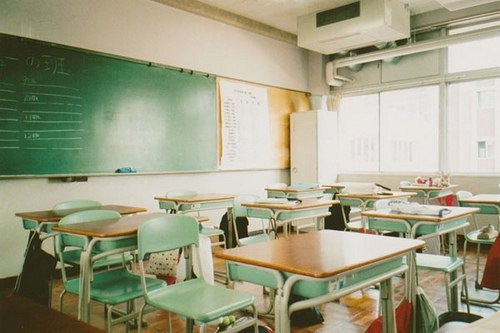
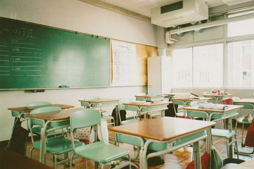

一张普通的A4复印纸，在我们的眼里，价格可谓微乎其微。可有人却将这样普通的纸，每张卖到了3万元。创造这个奇迹的，便是当今世界著名的超级创意纸艺大师彼得·卡罗森。
彼得·卡罗森出生于丹麦一个普通家庭，从小就对艺术表现出过人的天赋，尤其是剪纸。为了把自己的艺术天赋和创意才能运用到自己的作品中，他对以前作品的载体——纸张进行观察后，决定打破常规，让平面的图案“活”起来，实现从2D到3D的转换。彼得相信，把普通白纸变成有立体感的艺术品是一个“有魔力的过程”，并且在这个过程中，可以带来意想不到的成功。
然后是内容的定位，如何将普通的白纸赋予丰富的内涵，是成功的关键。彼得最终决定，内容选取那些唯美、浪漫的事物，因为浪漫的事物一旦以一种全新的形式展现出来，就会打破人们的惯性思维，从而收到意想不到的效果。彼得说：“我的大多数纸艺作品都带有非现实性，我的那些作品是和童话、浪漫故事有关，比如，我的作品《不可攻陷的城堡》，灵感源自安徒生的童话《锡兵》，爱上芭蕾舞女孩的小小锡兵，住在一座纸做的城堡中。在我的其他作品中，也都是一些小小的梦想，在梦中，我的小人物们被他们所属于强悍的自然本质所威胁，或迷失其中。这样的作品，自然会打动他人。”
如今，彼得的作品已在世界各地多次展出。美国纽约佩里·鲁宾斯坦画廊和丹麦的哥本哈根博物馆均收藏了他的作品。彼得创造的奇迹，正如他的超级创意一样，只需打破常规，成功就会随之而来。